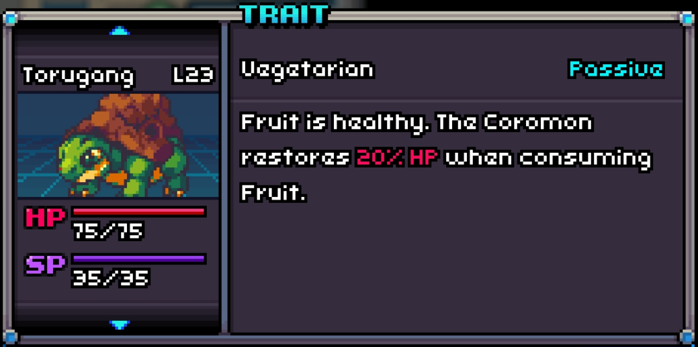
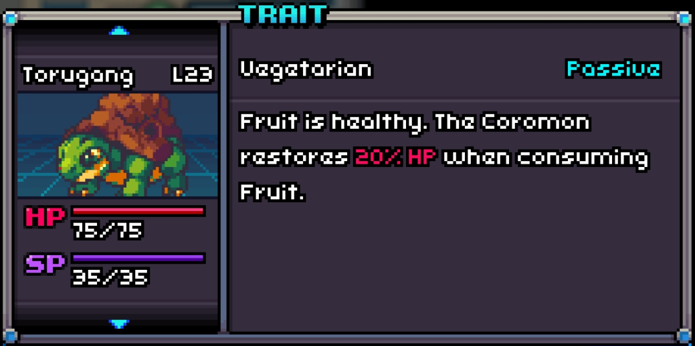

A perfect Embaval with Vegetarian!
Vegetarian
Vegetarian is a passive trait that boosts HP recovery gained from fruits by 20%.

A perfect Embaval with Vegetarian!
Vegetarian is a passive trait that boosts HP recovery gained from fruits by 20%.
| # in Corodex | Name | Type | Traits | HP | Speed | Attack | Defense | Sp. Att | Sp. Def |
|---|